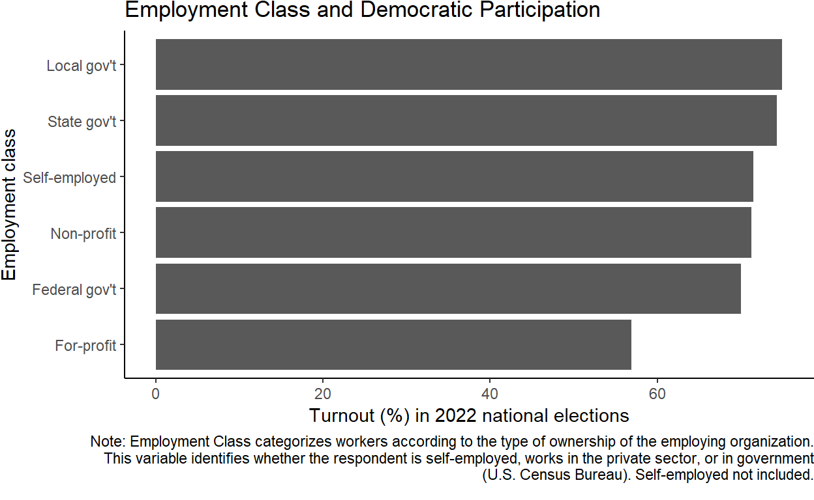
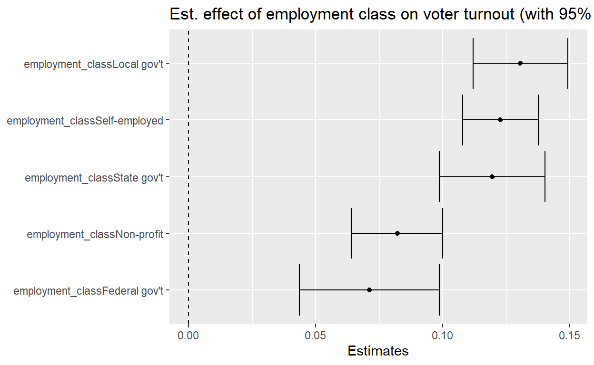

Owen’s final project on the relationship between employment class and democratic participation.
library(tidyverse)
library(stringr)
library(dplyr)
#loading data and selecting variables
#census_raw <- read_csv("nov22pub (1).csv")
#census <- census_raw |>
#select(employment_class=PEIO1COW, voted=PES1, income_code=HEFAMINC, education=PEEDUCA, state=GESTFIPS, sex=PESEX, race=PTDTRACE)
#write.csv(census,"census.csv")
census <- read_csv("census.csv")#preparing data
#replacing coded values and creating new variables
census$employment_class <- census$employment_class |>
case_match(1 ~ "Federal gov't",
2 ~ "State gov't",
3 ~ "Local gov't",
4 ~ "For-profit",
5 ~ "Non-profit",
6 ~ "Self-employed",
7 ~ "Self-employed",
.default = "other")
census <- census |>
filter(employment_class != "other")
#creating binary employment type variable
census <- census |>
mutate(employment_type = case_when(
employment_class == "Federal gov't" | employment_class == "State gov't" | employment_class == "Local gov't" | employment_class == "Non-profit" | employment_class == "Self-employed" ~ "Other",
employment_class == "For-profit" ~ "For-profit"))
#numeric voted variable
census$voted_num <- census$voted |>
case_match(1 ~ 1,
2 ~ 0,
.default= 2)
#character voted variable
census$voted <- census$voted |>
case_match(1 ~ "Yes",
2 ~ "No",
.default = "other")
#filtering out others
census <- census |>
filter(voted != "other")
#adjusting sex variable
census$sex <- census$sex |>
case_match(1 ~ "male",
2 ~ "female")
census$house_income <- census$income_code |>
case_match(-1 ~ "other",
1 ~ "less than 5",
2 ~ "5 to 7.499",
3 ~ "7.5 to 9.999",
4 ~ "10 to 12.499",
5 ~ "12.5 to 14.999",
6 ~ "15 to 19.999",
7 ~ "20 to 24.999",
8 ~ "25 to 29.999",
9 ~ "30 to 34.999",
10 ~ "35 to 39.999",
11 ~ "40 to 49.999",
12 ~ "50 to 59.999",
13 ~ "60 to 74.999",
14 ~ "75 to 99.999",
15 ~ "100 to 149.999",
16 ~ "150 or more")
census <- census |>
filter(house_income != "other")
#broadening above household income categories
census <- census |>
mutate(broad_income_categories = case_when(
income_code >= 1 & income_code <= 5 ~ "Below 15,000",
income_code >= 6 & income_code <= 9 ~ "15,000 to 34,999",
income_code >= 10 & income_code <= 12 ~ "35,000 to 59,999",
income_code >= 13 & income_code <= 14 ~ "60,000 to 99,999",
income_code == 15 ~ "100,000 to 149,999",
income_code == 16 ~ "150,000 or more"))
#creating numeric household income variable by taking average of upper/lower house_income bounds
census$house_income_num <- census$income_code |>
case_match(1 ~ 2500,
2 ~ 6250,
3 ~ 8750,
4 ~ 11250,
5 ~ 13750,
6 ~ 17500,
7 ~ 22500,
8 ~ 27500,
9 ~ 32500,
10 ~ 37500,
11 ~ 45000,
12 ~ 55000,
13 ~ 67500,
14 ~ 87500,
15 ~ 125000,
16 ~ 150000)
census$education <- census$education |>
case_match(31 ~ "less than 1st grade",
32 ~ "1st-4th",
33 ~ "5th or 6th",
34 ~ "7th or 8th",
35 ~ "9th",
36 ~ "10th",
37 ~ "11th",
38 ~ "12th no diploma",
39 ~ "high school diploma",
40 ~ "some college no degree",
41 ~ "associate degree vocational",
42 ~ "associate degree academic",
43 ~ "bachelor's degree",
44 ~ "master's degree",
45 ~ "professional degree",
46 ~ "doctorate degree")
education_levels <- c("less than 1st grade", "1st-4th", "5th or 6th", "7th or 8th", "9th", "10th", "11th", "12th no diploma", "high school diploma", "some college no degree", "associate degree vocational", "associate degree academic", "bachelor's degree", "master's degree", "professional degree", "doctorate degree")
census$education <- factor(census$education, levels = education_levels)
census <- census |>
mutate(college_degree = case_when(
education == "less than 1st grade" | education == "1st-4th" | education == "5th or 6th" | education == "7th or 8th" | education == "9th" | education == "10th" | education == "11th" | education == "12th no diploma" | education == "high school diploma" | education == "some college no degree" ~ 0,
education == "associate degree vocational" | education == "associate degree academic" | education == "bachelor's degree" | education == "master's degree" | education == "professional degree" | education == "doctorate degree" ~ 1))
census$state <- as.character(census$state)
census$employment_class <- as.factor(census$employment_class)
census$race <- census$race |>
case_match(1 ~ "White",
2 ~ "Black",
3 ~ "American Indian",
4 ~ "Asian",
5 ~ "Hawaiian/Pacific Islander",
.default = "Mixed")Is one’s ability or willingness to participate in democracy affected by where they work? This project examines the relationship between democratic participation and “employment class†as defined by the United States Census Bureau. The Bureau divides American workplaces into six classes: federal government, state government, local government, private for-profit, private non-profit, and self-employed. I hypothesize that those who are the most inclined to participate (1) work in settings where politics are involved or discussed, (2) have more control over their schedules, and/or (3) benefit from workplace autonomy. The first because proximity to politics can inspire or pressure one to participate. The second because greater control over one’s schedule enables them to carve out time for political activities like rallies and voting. And the third because the democratic theory literature suggests a relationship between autonomy in the workplace—that is, the ability of workers to dialogue and collaborate with bosses to shape their work experience and the direction of the organization—and participation in the polity: autonomous workers develop useful decision making and information processing tools and a sense of agency that carry over from the workplace to the political realm (Pateman 1970).
Thus, I expect to find that workers for the government, non-profits, and the self-employed participate the most, while workers for for-profits participate the least. Government workplaces are proximate to politics in the sense that their mandates and directives are directly determined through the political process. Their bosses are or are appointed by politicians. Their day-to-day work experiences are shaped by politics so they are likely invested in political decision making. Those who are self-employed set their own work hours and can therefore carve out the time needed for political activity such as voting. Non-profit workplaces are often small, meaning workers have more opportunities to directly interface with decision makers (Bureau of Labor Statistics). For-profit workplaces are often large and hierarchical; average workers have little opportunity to shape the direction of the company and limited control over their schedules, and may or may not be close to the political process (Francis 2017).
Learning about the work conditions favorable to democratic participation can inform national- and state-level labor policies. Governments should want to encourage participation among citizens.
Respondents to the Census Bureau’s monthly Current Population Survey are asked to identify themselves as one of the six classes of workers, as well as report their voting history, household income, education level, location, and more. The most recent survey asked 126,097 respondents whether or not they voted in the 2022 national elections. To test my hypothesis, I compare the 2022 turnout rates of each class, controlling for potential confounders such as income and education level. My hypothesis will be supported if I discover that workers at for-profits turned out a lower rate than workers for the other classes in 2022. I use voter turnout as a measure of democratic participation on the whole because voting is the most basic and accessible form of participation, meaning it should capture workers of all degrees of commitment: the least committed participants will vote, and the most committed participants will vote and engage in other democratic activities such as attending rallies.
This is a cross-sectional research design wherein I observe turnout estimates across multiple categorical groups at a single point in time, 2022. The code that I used to prepare the data (import, wrangle, etc.) can be found at the bottom of the site.
First, I calculate the proportions of each group in the survey sample.
census |>
group_by(employment_class) |>
summarize(Number = n()) |>
mutate(`Proportion (%)` = Number / sum(Number) * 100) |>
knitr::kable(digits = 2)| employment_class | Number | Proportion (%) |
|---|---|---|
| Federal gov’t | 1141 | 3.02 |
| For-profit | 24916 | 65.91 |
| Local gov’t | 2585 | 6.84 |
| Non-profit | 2884 | 7.63 |
| Self-employed | 4222 | 11.17 |
| State gov’t | 2054 | 5.43 |
For-profit employees make up the vast majority of the sample (67%). This is consistent with the Bureau of Labor Statistics’ projection that 71% of all U.S. workers work for for-profit firms. Thus, inferences about for-profit employees are relevant to a large portion of Americans.
An initial plot of the dependent variable (2022 voter turnout) reveals that, indeed, turnout differs significantly across classes. In particular, government and non-profit employees and the self-employed turned out at a similar rate (above 70%), a rate much higher than that of for-profit employees (57%).
#calculating turnout rates by employment class
employment_class_turnout <- census |>
group_by(employment_class) |>
summarize(turnout = mean(voted_num) * 100)
knitr::kable(employment_class_turnout, digits = 2)| employment_class | turnout |
|---|---|
| Federal gov’t | 70.03 |
| For-profit | 56.92 |
| Local gov’t | 74.97 |
| Non-profit | 71.29 |
| Self-employed | 71.51 |
| State gov’t | 74.29 |
#plotting turnout rates by employment class
employment_class_turnout_plot <- employment_class_turnout |>
ggplot(mapping = aes(x = fct_reorder(employment_class, turnout), y = turnout)) +
geom_col() +
coord_flip() +
labs(
title = "Employment Class and Democratic Participation",
x = "Employment class",
y = "Turnout (%) in 2022 national elections",
caption = "Note: Employment Class categorizes workers according to the type of ownership of the employing organization. This variable identifies whether the respondent is self-employed, works in the private sector, or in government (U.S. Census Bureau). Self-employed not included."
) +
theme_classic() +
theme(plot.margin = margin(b = 10))
wrapped_caption <- str_wrap("Note: Employment Class categorizes workers according to the type of ownership of the employing organization. This variable identifies whether the respondent is self-employed, works in the private sector, or in government (U.S. Census Bureau). Self-employed not included.", width = 112)
employment_class_turnout_plot <- employment_class_turnout_plot + labs(caption = wrapped_caption)
employment_class_turnout_plot
An initial visualization of 2022 turnout rates suggests a different in rates across classes. To explore this relationship, I conduct a regression analysis of turnout rates on employment class, controlling for a number of potential confounders. Those confounders are the respondent’s annual household income, whether or not they have a college degree, which state they live in, their sex, and their race. Each is associated with election turnout and could be associated with employment class: some classes of workers could receive higher incomes than other classes, and higher income is associated with higher turnout (the same goes for college education); some states feature more contested elections and hence higher voter turnout, and those states could be host to a higher proportion of a particular class of worker; there could be a higher proportion of one sex or race in a given class, and members of particular sexes and races turn out to vote at higher rates.
library(modelsummary)
census$employment_class <- relevel(census$employment_class, ref = "For-profit")
lm1 <- summary(lm(voted_num ~ employment_class + house_income_num + college_degree + state + sex + race, data = census))
lm2 <- summary(lm(voted_num ~ employment_class, data = census))
var_labels <- c(
"employment_classFederal gov't" = "Federal gov't",
"employment_classLocal gov't" = "Local gov't",
"employment_classNon-profit" = "Non-profit",
"employment_classSelf-employed" = "Self-employed",
"employment_classState gov't" = "State gov't",
"house_income_num" = "Annual household income",
"college_degree" = "College degree",
"sex" = "Sex",
"raceHawaiian/Pacific Islander" = "Race: Hawaiian/Pacific Islander",
"raceWhite" = "Race: White",
"raceBlack" = "Race: Black",
"raceMixed" = "Race: Mixed",
"raceAsian" = "Race: Asian")
modelsummary::modelsummary(list(lm2, lm1),
gof_map = c("nobs",
"r.squared",
"adj.r.squared"),
statistic = c("s.e. = {std.error}",
"p = {p.value}"),
coef_map = var_labels,
note = "State covariate included in analysis but omitted from table",
stars = TRUE)| Â (1) | Â Â (2) | |
|---|---|---|
| Federal gov’t | 0.131*** | 0.071*** |
| s.e. = 0.015 | s.e. = 0.014 | |
| p = <0.001 | p = <0.001 | |
| Local gov’t | 0.180*** | 0.131*** |
| s.e. = 0.010 | s.e. = 0.010 | |
| p = <0.001 | p = <0.001 | |
| Non-profit | 0.144*** | 0.082*** |
| s.e. = 0.009 | s.e. = 0.009 | |
| p = <0.001 | p = <0.001 | |
| Self-employed | 0.146*** | 0.123*** |
| s.e. = 0.008 | s.e. = 0.008 | |
| p = <0.001 | p = <0.001 | |
| State gov’t | 0.174*** | 0.120*** |
| s.e. = 0.011 | s.e. = 0.011 | |
| p = <0.001 | p = <0.001 | |
| Annual household income | 0.000*** | |
| s.e. = 0.000 | ||
| p = <0.001 | ||
| College degree | 0.178*** | |
| s.e. = 0.005 | ||
| p = <0.001 | ||
| Race: Hawaiian/Pacific Islander | -0.063 | |
| s.e. = 0.043 | ||
| p = 0.139 | ||
| Race: White | 0.081*** | |
| s.e. = 0.023 | ||
| p = <0.001 | ||
| Race: Black | 0.082*** | |
| s.e. = 0.025 | ||
| p = <0.001 | ||
| Race: Mixed | 0.009 | |
| s.e. = 0.029 | ||
| p = 0.765 | ||
| Race: Asian | -0.091*** | |
| s.e. = 0.026 | ||
| p = <0.001 | ||
| Num.Obs. | 37802 | 37802 |
| R2 | 0.024 | 0.119 |
| R2 Adj. | 0.023 | 0.117 |
| + p < 0.1, * p < 0.05, ** p < 0.01, *** p < 0.001 | ||
| State covariate included in analysis but omitted from table |
Model 1 does not control for confounders. Model 2 does. Both models suggest a clear and statistically significant relationship between turnout and employment class, although the estimated effect is attenuated when controlling for confounders. The baseline group is for-profit employees. Thus, the coefficients for each class represent the difference in turnouts between that class and for-profit employees. Controlling for confounders, federal government employees turned out at a rate 7.1 percentage points higher than for-profit employees in 2022; state government employees turned out at a rate 12 percentage points higher; local government employees turned out a rate 13.1 percentage points higher; workers for non-profits turned out at a rate 8.2 percentage points higher; and the self-employed turned out at a rate 12.3 percentage points higher. The p-value for each coefficient is below 0.001, meaning there is less than a 0.1% chance that the coefficients would be observed under a null hypothesis that there is no difference in turnout rates between the classes. Thus, we can reject the null, and consider the results statistically significant.
Interestingly, the estimated effect of annual household income on turnout is zero. Meanwhile, the estimated effect of college education—17.8%—is larger than that of belonging to any of the classes. You would expect that a major mechanism through which college education has any impact on one’s life experience is increasing their income. The fact that income is a non-factor according to these estimates underlies the effect of knowledge on participation: receiving an education increases one’s knowledge, and having more knowledge could increase one’s ability or willingness to participate in elections. Elections could be more accessible to those who have thought about civic issues in school. If this interpretation of the estimates is correct, the value of workplace autonomy would be underscored: more autonomy in the workplace endows workers with more knowledge about decision making, finance, and more; that knowledge could be an important factor in their choosing to vote in elections.
I now visualize the coefficients with 95% confidence intervals.
library(broom)
lm1tidy <- lm1 |>
tidy(conf.int = TRUE)
lm1tidy |>
filter(term != "(Intercept)", term != "state2", term != "state3", term != "state4", term != "state5", term != "state6", term != "state7", term != "state8", term != "state9", term != "state10", term != "state11", term != "state12", term != "state13", term != "state14", term != "state15", term != "state16", term != "state17", term != "state18", term != "state19", term != "state20", term != "state21", term != "state22", term != "state23", term != "state24", term != "state25", term != "state26", term != "state27", term != "state28", term != "state29", term != "state30", term != "state31", term != "state32", term != "state33", term != "state34", term != "state35", term != "state36", term != "state37", term != "state38", term != "state39", term != "state40", term != "state41", term != "state42", term != "state43", term != "state44", term != "state45", term != "state46", term != "state47", term != "state48", term != "state49", term != "state50", term != "state51", term != "state52", term != "state53", term != "state54", term != "state55", term != "state56", term != "raceAsian", term != "raceBlack", term != "raceWhite", term != "raceHawaiian/Pacific Islander", term != "raceMixed", term != "college_degree", term != "house_income_num", term != "sexmale") |>
mutate(term = fct_reorder(term, estimate)) |>
ggplot(aes(estimate, term)) +
geom_point() +
geom_errorbarh(aes(xmin = conf.low, xmax = conf.high)) +
geom_vline(xintercept = 0, lty = 2) +
labs(
x = "Estimates",
y = NULL,
title = "Est. effect of employment class on voter turnout (with 95% intervals)"
)
Working for a local government is associated with the greatest increase in turnout, followed by being self-employed, working for a state government, working for a non-profit, then working for the federal government. None of the 95% confidence intervals contain zero (none cross the dotted line), so, in accord with our conclusion based on the p-values, we can conclude that the coefficients are significantly different from zero at the five percent level. Considering that we controlled for the most prominent confounders, that the estimates are statistically significant, and the sample is randomly selected and representative of the general U.S. population, I am comfortable interpreting these results causally, i.e., concluding that belonging to a certain employment class cause one’s turnout to increase or decrease, depending on the class.
I test the representativeness of the sample by calculating two basic descriptive statistics:
census |>
group_by(race) |>
summarize(Number = n()) |>
mutate(`Proportion (%)` = Number / sum(Number) * 100) |>
knitr::kable(digits = 2)| race | Number | Proportion (%) |
|---|---|---|
| American Indian | 408 | 1.08 |
| Asian | 1833 | 4.85 |
| Black | 3585 | 9.48 |
| Hawaiian/Pacific Islander | 172 | 0.46 |
| Mixed | 753 | 1.99 |
| White | 31051 | 82.14 |
census |>
group_by(sex) |>
summarize(Number = n()) |>
mutate(`Proportion (%)` = Number / sum(Number) * 100) |>
knitr::kable(digits = 2)| sex | Number | Proportion (%) |
|---|---|---|
| female | 18281 | 48.36 |
| male | 19521 | 51.64 |
These race and gender breakdowns are consistent with other Census Bureau surveys.
In this project, I discovered that there is a statistically significant relationship between one’s employment class and their democratic participation, measured through 2022 voter turnout rates. I confirmed my hypothesis that government and non-profit employees and the self-employed participate the most, while employees at for-profits participate the least; controlling for potential confounders, for-profit employees turned out at least 7.1 percentage points lower than any of the other classes. One potential threat to a causal interpretation of this result is social desirability bias: respondents to the Current Population Survey could have reported that they voted when they really did not, since voting is socially desirable. I am not worried by this threat, however, since I assume that each of the groups I am comparing are subject to to the same level of social desirability bias, and thus are still comparable. The fact that the sample is randomly selected (from the United States Postal Service Master Address File—a list of all U.S. permanent addresses), and is thus representative of the general U.S. population, is an important indication of the design’s internal validity. The major threat to inference I am left concerned about is non-response bias: the original sample contained 126,097 respondents; after filtering out those who did not report their employment class or voting history, I was left with 37,802 respondents. That is a 70% decrease in sample size. I am worried that a certain kind of person chose not to report their class and voting history, and that that kind of person is associated with one class or another—especially when dealing with issues of apathy. Say, for example, local government employees are the most apathetic; their apathy could lead them to leave survey questions blank and also to not vote. Our sample would be left only with the most enthusiastic local government employees who chose to complete the full survey and vote. Thus, while it would look like local government employees vote at a higher rate than for-profit employees, the general population of local government employees could actually be the least involved—which would be revealed if the a representative sample of such employees were studied. There is no way for me to account for this kind of potential bias within the scope of this project. My analysis could be improved by collecting qualitative data—perhaps through interviews—that evaluates the mechanisms I proposed in the introduction. I would ask members of each class why they do or do not vote. Then I would gain an insight into why it is that for-profit employees participate the least while the others participate more.
Francis, Theo. “Why Americans Are More Likely to Work for a Large Employer, in 20 Charts.†Wall Street Journal, 2017, www.wsj.com/graphics/big-companies-get-bigger/.
Pateman, Carole. Participation and Democratic Theory. Cambridge, Cambridge University Press, 1970, pp. 45–66.
https://www2.census.gov/programs-surveys/cps/techdocs/cpsnov20.pdf
https://www.bls.gov/bdm/nonprofits/nonprofits.htm
https://www.census.gov/quickfacts/fact/table/US/PST045222
https://www.bls.gov/emp/tables/employment-by-major-industry-sector.htm#2